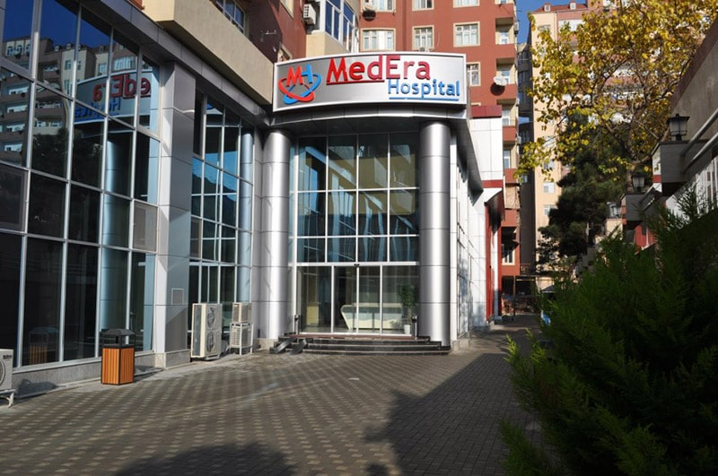
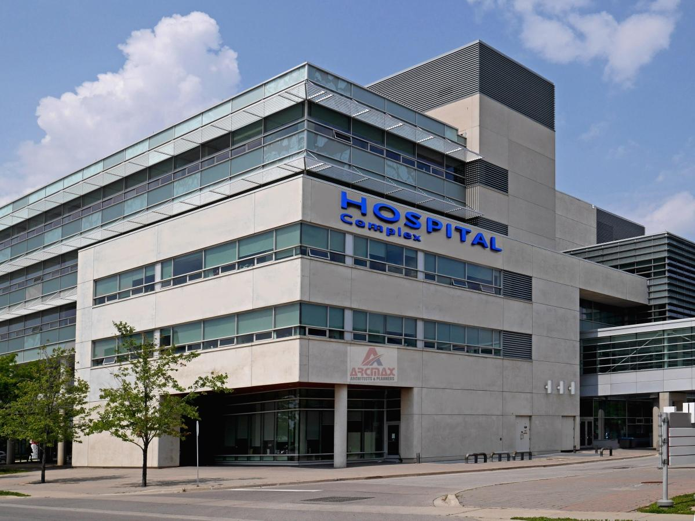
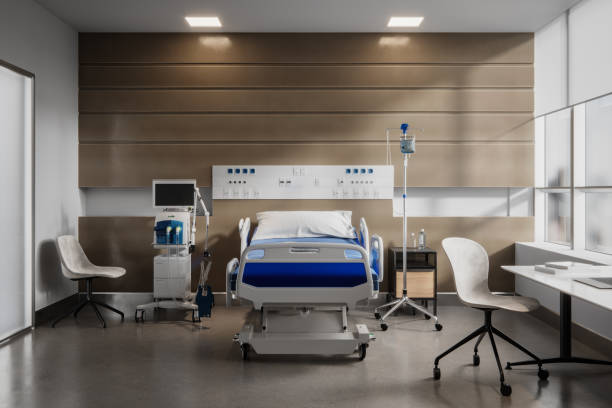
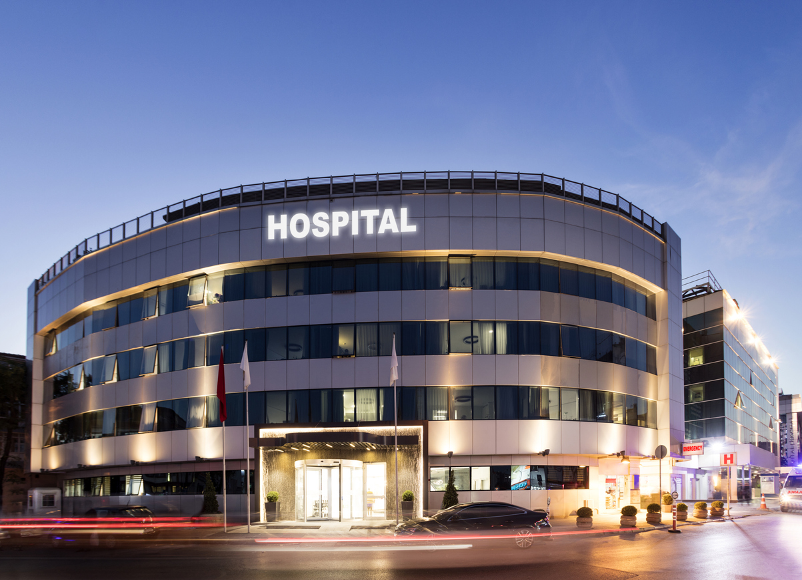
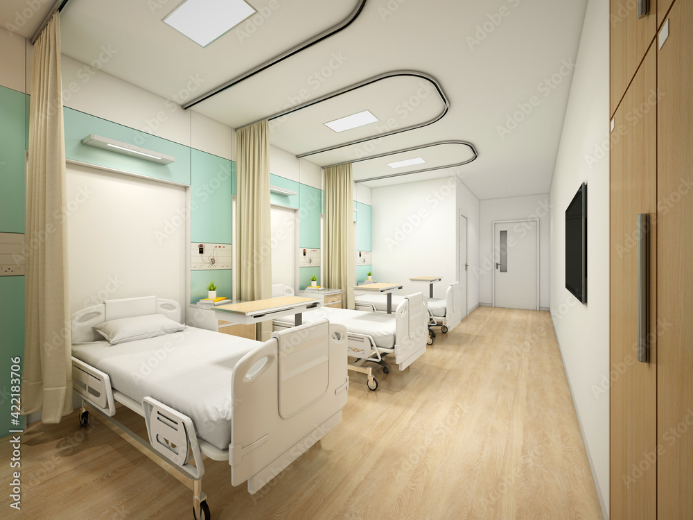

Göz müayinəsi üçün ən son aparatura ilə təchiz edilmiş oftalmologiya şöbəmiz.
Müasir cərrahi avadanliqlarla təchiz edilmiş cərrahiyyə şöbəmiz.
Mədəbağirsaq xəstəliklərin müayinə və müalicəsi.
Göz müayinəsi üçün ən son müasir aparatlar ilə təchiz edilmişdir.
Ürəyinizin sağlamliği üçün peşəkar həkim heyəti fəaliyyət göstərir.
    Hekimler
Cerrahlar
Dermatoloqlar
Kardioloqlar
Alerqoloqlar
Hospital peşəkar kollektiv, bilik və təcrübələrini səmimi şəkildə paylaşan türk professor və uzman həkim heyəti ilə sağlamliğinizin keşiyindədir!
Hospital vətəndaşlarimiza yüksək keyfiyyət, güvən və davamliliği bir arada təqdim etmək məqsədilə xidmətinizdədir.
Dünya standartlarina uyğun tibbi xidməti ölkəmizdə tətbiq edən EGE HOSPİTAL ən müasir tibb texnologiyasi ilə keyfiyyətli tibbi xidmətə hər tərəfli təminat yaradir.
Klinika və tibbi yeniliklərlə bağli ən son xəbərləri oxu.
Düzgün müayinə və müalicə üçün ölkə xaricinə çixmağa ehtiyac yoxdur.Avrasiya Hospital uzaq yollari yaxin edir!
Klinika və tibbi
yeniliklərlə bağli
ən son xəbərləri oxu
EGE HOSPİTAL ən müasir keyfiyyətli tibbi xidmətə hər tərəfli təminat yaradir
tibb texnologiyasi ilə
keyfiyyətli tibbi xidmətə hər tərəfli təminat yaradir
Avrasiya
Hospital
uzaq yollari yaxin edir!
Düzgün müayinə
və müalicə üçün
ölkə xaricinə çixmağa ehtiyac yoxdur
Hospital peşəkar kollektiv
və türk professor və uzman həkim
heyəti ilə sağlamliğinizin keşiyindədir
Niyazi Kardioloq
Yusif Cerrah
Seyid Alerqoloq
Huseyn Recebov
Cahid Velizade
Tibbi siğorta haqqinda
Əhalinin sağlamliğinin qorunmasi haqqinda
Publik hüquqi şəxslər haqqind”
Kliniki Tibbi Mərkəz
1 sayli Şəhər Xəstəxanasi
Semaşko
1 sayli Klinik Tibbi Mərkəz
Kliniki Tibbi Mərkəz
1 sayli Şəhər Xəstəxanasi
İcbari Tibbi Siğorta
data50
Tebib40
Semaskoclinica
Modern10
Medera5
Milanahospital
Clinic90
Real80
Modern0
Doktor100
İcbari tibbi siğorta sahəsinin inkişafini təmin etmək.
İstənilən şəhid ailəsi təşkil olunmuş müayinə günlərində, ödənişsiz müayinədən keçə bilər.
Nefes komandasi hər zaman sizə dəstək olmağa hazirdir.
Koronavirusdan sağalandan sonra ən çox hansi problemlər yaranir?
Həkim-kardioloq qeyd edib ki, risk qrupunda olan koronavirus xəstələri sağalandan sonra da vaxtaşiri olaraq müayinədən keçməlidirlər
Ambulator şəraitdə müayinə və müalicə
Agentliyin dəyərləri
Funksional-diaqnostik müayinələr
Təcili vaksinasiyalar
Stasionar müalicə
Şəffafliq
Əlçatanliq
Güvənlilik
Peşəkarliq
Ədalətlilik
Medera hospitap good
Hospital Milananew
Real Clinica today.
Hospital Ege with new technology
Prezidentinin 2016-ci il 24 noyabr tarixli 1125 nömrəli Fərmani ilə yaradilmişdir.
Today weather is bad good
The food is not tasty delicious
I'm without mood happy
It is bad good
My favorite color is blue red.
I'm full hungry full.
The Clinicclosed opened.
The Modern Clinica is old new.
The Real Clinic is old Modern.
Medera Hospital is little big.